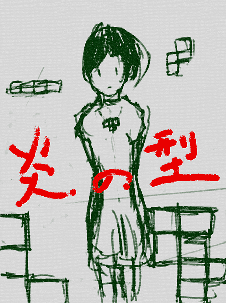
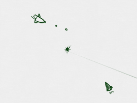
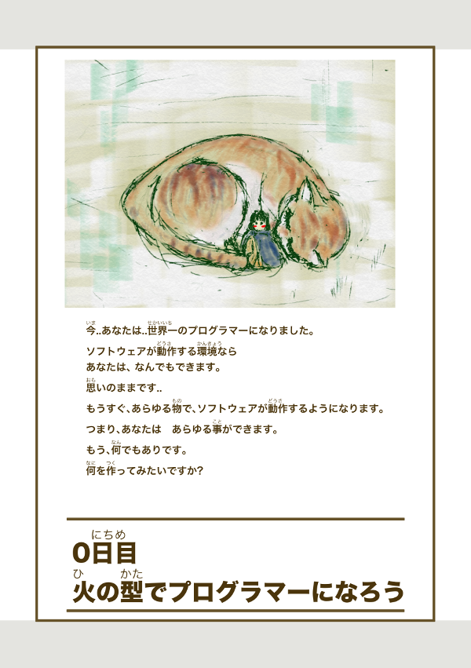

炎の型工房に戻るor Gitbook@kyorohiroに戻る

About
内容

本書では、Scratchを利用して、様々なゲームを作成していきます。 世界初のビデオゲームである「Tennise for two」、世界初のシューティングゲームである「Spacewar!」。アーケードでビデオゲームの地位を確立した「Pong」などのチュートリアルが収録されています。
ことはじめ
本文書は、CoderDojo八王子にて進行を務めるにあたり、Kyorohiroがまとめたものです。
2015/08/16 の時点で、プログラム道場向けの日本語のプログラムのチュートリアルが少ない状態にあります。これらを、補強する目的として、チュートリアルの作成と公開をする事にしました。
どんどん追加していきます。
https://www.gitbook.com/book/kyorohiro/firestyle/details
LICENSES
http://creativecommons.org/licenses/by/4.0/
この文書のライセンスはCC0で配布しています。だいだいの権利を放棄しています。
まるっとコピーしても良いです。改変して配布しても良いですし。有料で利用してもらっても良いです。これらの事がkyorohiroの断りなくできます。
Table
- Tennis For Two <難易度 中上>
- Spacewar!<難易度 上下>
- Pong <難易度 中>
- Tiny TETRIS<難易度 上上>
- Dojo:InkRunner <難易度 下上>
- Practice:Gravity<難易度 下中>
- プロジェクトを作ろう
- 地球を作る
- 地球の位置とサイズを調整する
- 月の大きさを調整する
- 速度に応じて移動する
- 引力に応じて移動する
- 軌道を記録する
- 完成!!
- [おまけ:向きを計算してみる]
- [おまけ:距離を計算してみる]
- Dojo:おにごっこ<難易度 下中>
- Practice:ポリゴン<難易度 中上>
- 作業テーブル:パズドラッぽいの<難易度 上中>
入門者向け
炎の型は難易度が高めなので、 Scratchが初めての方向けに、Scratch を用いた プログラムの入門記事を書きました。
こたらも、どうぞ。
火の型 Scratch 2.0 でプログラム入門
https://www.gitbook.com/book/kyorohiro/firestyle/details 